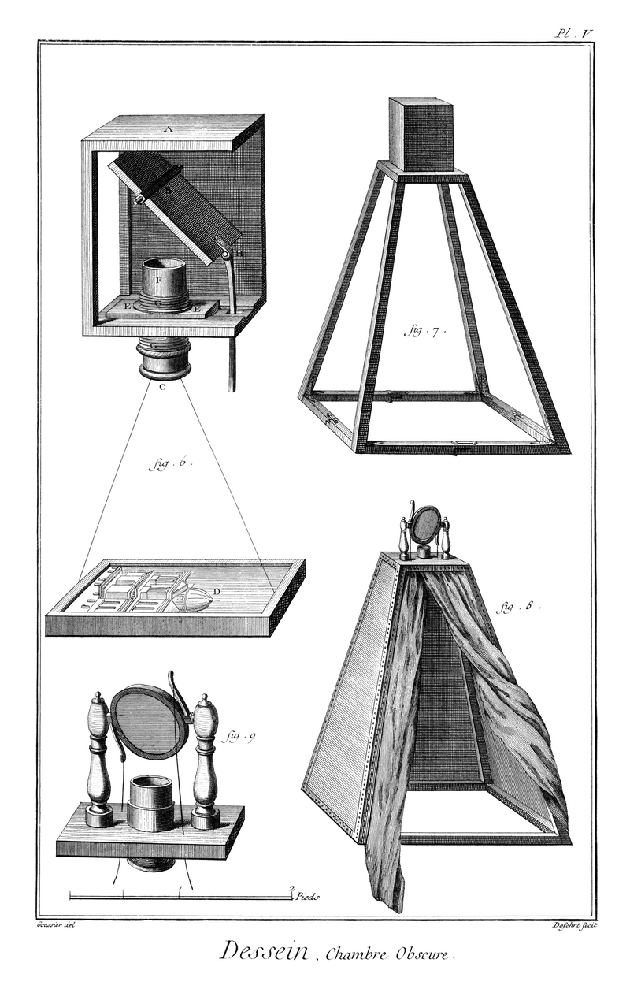
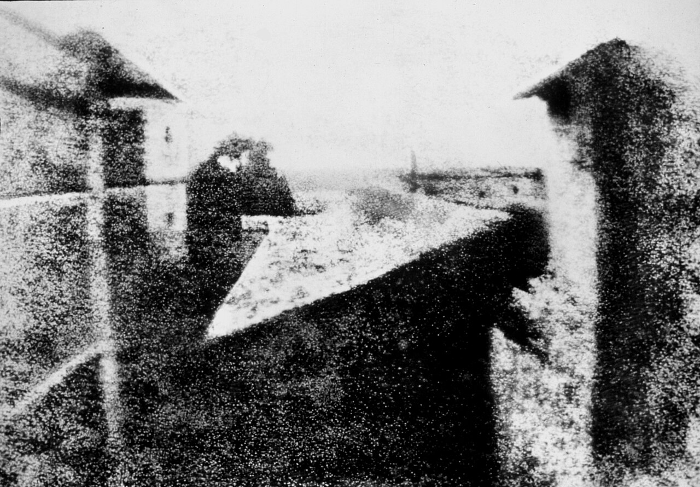
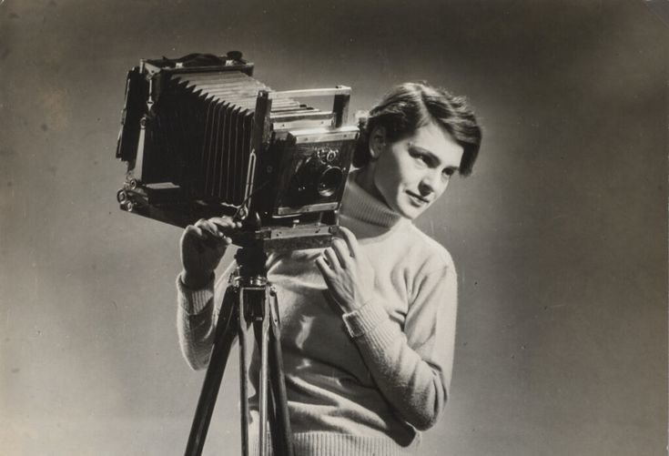
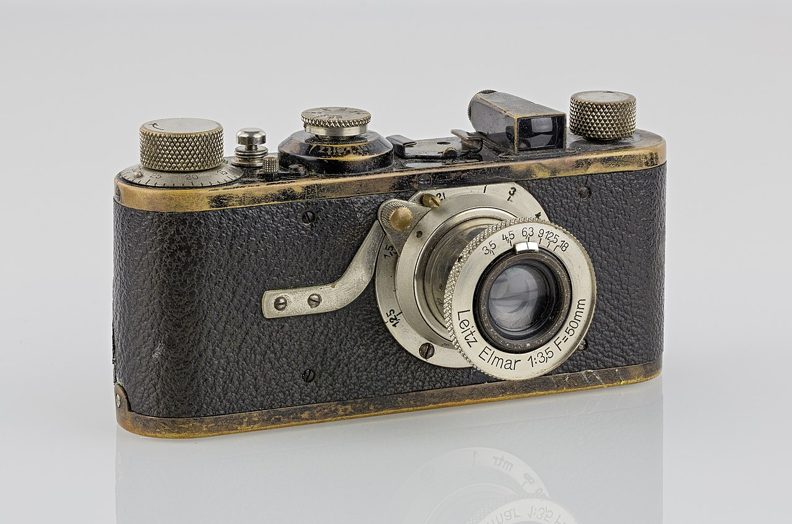

La primera cámara no se desarrolló hasta el siglo XIX, pero antes ya se habían inventado otros
aparatos que
intentaban plasmar la imagen en una superficie.
El más importante fue la cámara oscura, un dispositivo que se usó durante siglos como
entretenimiento.
Se trata de una caja cerrada con un pequeño agujero por donde entra la luz. Esta luz proyecta la
imagen del
exterior al interior de la caja: si se coloca un material sensible a la luz en la pared
interior, se
consigue una especie de fotografía.

Ilustración del funcionamiento de una cámara oscura.
La heliografía y los primeros avances
El inventor Joseph Nicéphore Niépce mejoró este prototipo. Dentro de la caja instaló una placa
cubierta de
betún que se endurecía con el contacto de la luz. Una vez terminado el proceso, se limpiaba el
betún que no
había endurecido y la imagen permanecía.
En 1826 consiguió crear una imagen fija del patio de su casa. A esta imagen la denominó
heliografía y se
considera la primera fotografía de la historia. Sin embargo, la cámara oscura todavía podía
mejorar.

Heliografía de Niépce, considerada la primera fotografía.
El daguerrotipo y el calotipo
La primera cámara no fue inventada hasta años más tarde. Lo hizo Louis Daguerre en 1839, en su
honor, el
invento se bautizó como daguerrotipo.
Daguerre pretendía mejorar la caja oscura y acortar el proceso, ya que con el sistema de
Nicéphore Niépce la
exposición duraba horas antes de que el betún se endureciera.
Sustituyó el betún por unas placas hechas de cobre y recubiertas de plata. Al principio la imagen
no quedaba
grabada en las placas y había que pasarlas por un proceso químico que resaltaba la imagen.
En paralelo, el científico británico Henry Fox Talbot experimentó con otros materiales. Apenas
unos días
después de la presentación del daguerrotipo anunció que había descubierto el papel sensible a la
luz.
La principal ventaja de este sistema, llamado calotipo, es que el papel se convierte en un
negativo de la
imagen que puede utilizarse para hacer copias de la fotografía.
Dos grandes hitos
La fotografía empezó a usarse para ilustrar acontecimientos a partir de la segunda mitad del
s.XIX, fue entonces cuando
apareció la figura del reportero fotográfico de guerras.

Margaret Bourke-White fue la primera mujer estadounidense corresponsal de guerra.
El problema era que la cámara todavía era un aparato muy grande y pesado y el fotógrafo
necesitaba trasladar un pequeño
laboratorio para revelar los negativos al momento. Todo esto cambió con el lanzamiento de la
primera cámara Kodak.
El segundo gran cambio que contribuyó a la difusión de las cámaras fue la invención del carrete
de película, que
permitía hacer más de una fotografía cada vez.
En 1925, el ingeniero alemán Oskar Barnak presentó la primera cámara Leica, más rápida y con
carrete incorporado.

Leica I, 1927.
A partir de aquel momento, la fotografía se extendió rápidamente. Aparecieron más fabricantes,
los modelos eran cada vez
mejores y tener una cámara era muy habitual.